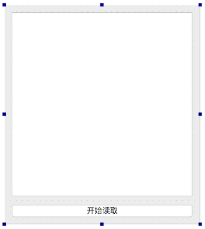
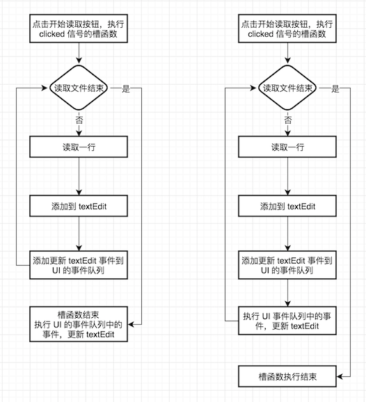

读取文件显示到 text edit 中，一个非常简单的需求，啥也不说了，撸起袖子，打开 Qt Creator 开干。
先设计 UI 如下，中间是 QTextEdit，底部是按钮 QPushButton:

点击按钮，按行读取文件，然后添加到 QTextEdit，对我们来说也是分分钟的事(Lambda Lambda Lambda):
1 | ReadingWidget::ReadingWidget(QWidget *parent) : QWidget(parent), ui(new Ui::ReadingWidget) { |
我系统上的路径是
/Users/Biao/Qt5.9.2/Docs/Qt-5.9.2/qtgui/qtgui.index，大家在自己系统上 Qt 的安装路径下找一下。
再次点击 开始读取，什么鬼，界面被冻住了，提示正忙，等几分钟内容才一次性显示出来。原因是读取文件、textEdit->append()、然后向 UI 事件队列发送了一个更新 textEdit 界面的事件，由于这些操作和执行 UI 事件队列中的事件等都是在同一个线程中按顺序执行(UI 线程)，所以要等到 while 循环结束后才执行 UI 事件队列中的更新 textEdit 界面事件，导致我们看到界面被冻住，读取完文件后一次性显示出所有内容。如果我们想每当读取到内容后，立即在 textEdit 中能够看到，解决这个题一般有 2 个方法:
- 立即执行 UI 事件队列中的事件：在第 15 行的下面加上一句
QApplication::processEvents()，立即执行 UI 事件队列中的事件 - 使用多线程：在一个新的线程中读取文件，不要在 UI 线程里读取，这样文件读取就不会阻塞 UI 线程了，将在 继承 QThread 实现多线程 中介绍使用多线程改写上面的程序
为什么增加一句
QApplication::processEvents()就能够解决问题呢，对比一下前后的流程图就能明白了:
通过这个简单的例子，我们知道了多线程的使用场景，把耗时的操作放到一个新线程中取执行，执行的状态通知 UI 线程显示给用户，不要让其阻塞用户界面，能够增加应用程序的响应，提高用户体验，下面介绍多线程的优点和缺点的内容来自于 https://en.wikipedia.org/wiki/Multithreading_(computer_architecture)，先从宏观上了解一下多线程:
Advantages of Multithreading
If a thread gets a lot of cache misses, the other threads can continue taking advantage of the unused computing resources, which may lead to faster overall execution as these resources would have been idle if only a single thread were executed. Also, if a thread cannot use all the computing resources of the CPU (because instructions depend on each other’s result), running another thread may prevent those resources from becoming idle.
If several threads work on the same set of data, they can actually share their cache, leading to better cache usage or synchronization on its values.
Disadvantages of Multithreading
Multiple threads can interfere with each other when sharing hardware resources such as caches or translation lookaside buffers (TLBs). As a result, execution times of a single thread are not improved but can be degraded, even when only one thread is executing, due to lower frequencies or additional pipeline stages that are necessary to accommodate thread-switching hardware.
Overall efficiency varies; Intel claims up to 30% improvement with its Hyper-Threading Technology,[1] while a synthetic program just performing a loop of non-optimized dependent floating-point operations actually gains a 100% speed improvement when run in parallel. On the other hand, hand-tuned assembly language programs using MMX or AltiVec extensions and performing data prefetches (as a good video encoder might) do not suffer from cache misses or idle computing resources. Such programs therefore do not benefit from hardware multithreading and can indeed see degraded performance due to contention for shared resources.
From the software standpoint, hardware support for multithreading is more visible to software, requiring more changes to both application programs and operating systems than multiprocessing. Hardware techniques used to support multithreading often parallel the software techniques used for computer multitasking. Thread scheduling is also a major problem in multithreading.